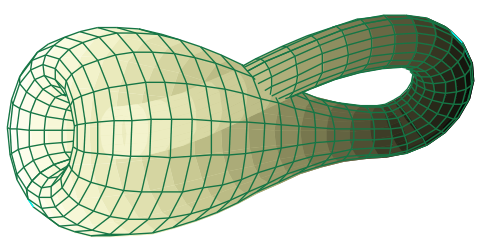

Tenth and last Homework: (Due Thursday 19 November 2020 at 17:00)
The homework assignment, in .pdf, and the same file in .tex.
Logical clarity and simplicity are your goal.
I recommend that you check that my .tex compiles in your LaTeX environment and that the output matches (mutatis
mutandis) the .pdf I provide. Also, as you answer problems in the .tex, continue to compile it to check for
errors.
Extra Credit: Each of the passwords used for zoom in this class has numerological significance.
I will give extra credit (added to test scores) of 5, 10, and 20 points for the answers to their numerological significance.
(5 for the first one answered, 10 for the second, and 20 for the third. I think that their difficulty is at least in geometric
progression.)
The answers must be posted in Piazza and in reply to the post I will put there, and must not be anonymous.
The tradition that evolved of anonymous posting is a bit of a pity.
Ninth Homework: (Due Wednesday 11 November 2020 at 17:00)
The homework assignment, in .pdf, and the same file in .tex.
Logical clarity and simplicity are your goal.
I recommend that you check that my .tex compiles in your LaTeX environment and that the output matches (mutatis
mutandis) the .pdf I provide. Also, as you answer problems in the .tex, continue to compile it to check for
errors.
You should let Gradescope know which page has which problem.
Eighth Homework: (Due Monday 2 November 2020 at 23:59)
The homework assignment, in .pdf, and the same file in .tex.
Logical clarity and simplicity are your goal.
I recommend that you check that my .tex compiles in your LaTeX environment and that the output matches (mutatis
mutandis) the .pdf I provide. Also, as you answer problems in the .tex, continue to compile it to check for
errors.
You should let Gradescope know which page has which problem.
Seventh Homework: (Due Monday 19 October 2020 at 23:59)
The homework assignment, in .pdf, and the same file in .tex.
Logical clarity and simplicity are your goal.
I recommend that you check that my .tex compiles in your LaTeX environment and that the output matches (mutatis
mutandis) the .pdf I provide. Also, as you answer problems in the .tex, continue to compile it to check for
errors.
You should let Gradescope know which page has which problem.
Sixth Homework: (Due Monday 12 October 2020 at 23:59)
The homework assignment, in .pdf, and the same file in .tex.
Logical clarity and simplicity are your goal.
I recommend that you check that my .tex compiles in your LaTeX environment and that the output matches (mutatis
mutandis) the .pdf I provide. Also, as you answer problems in the .tex, continue to compile it to check for
errors.
There is an extra credit problem to be handed in separately.
You should let Gradescope know which page has which problem.
Fifth Homework: (Due Monday 5 October 2020 at 23:59)
The homework assignment, in .pdf, and the same file in .tex.
This has a more moderate length. Logical clarity and simplicity are your goal.
I recommend that you check that my .tex compiles in your LaTeX environment and that the output matches (mutatis
mutandis) the .pdf I provide. Also, as you answer problems in the .tex, continue to compile it to check for
errors.
You should let Gradescope know which page has which problem.
Fourth Homework: (Due Monday 28 September 2020 at 23:59)
The homework assignment, in .pdf, and the same file in .tex.
This is a bit longer than previous homework, many of you need practice in writing proofs.
Aim to have clean proofs that use the definitions and perhaps even previously proven results (properly cited).
Logical clarity and simplicity are your goal.
I recommend that you check that my .tex compiles in your LaTeX environment and that the output matches (mutatis
mutandis) the .pdf I provide. Also, as you answer problems in the .tex, continue to compile it to check for
errors.
You should let Gradescope know which page has which problem.
|
Second Written Assignment
Your second written assignment involves researching Klein Bottles, and then writing a short
essay/discussion about Klein bottles.
Here are some sources to get you started, you should look up several other sources about Klein bottles.
Above all, enjoy these. The assignment is due Friday 2 October.
|

|
Third Homework: (Due Monday 14 September 2020 at 23:59)
The homework assignment, in .pdf, and the same file in .tex.
I recommend that you check that my .tex compiles in your LaTeX environment and that the output matches (mutatis
mutandis) the .pdf I provide. Also, as you answer problems in the .tex, continue to compile it to check for
errors.
You should let Gradescope know which page has which problem.
Second Homework: (Due Monday 7 September 2020 at 23:59)
The homework assignment, in .pdf, and the same file in .tex.
You should let Gradescope know which page has which problem.
Placing a \newpage command just before each question statement should put each question on a separate page
and facilitate this process.
First Homework: (Due Monday 31 August 2020 at 23:59)
First, watch the GVSU video on
Writing up a proof outline into a paragraph
(9:15) Screencast 1.2.4
The homework assignment, in .pdf, and the same file in .tex.
I have a one-page palette of colors defined using the dvipsnames option in xcolor (which is invoked
in the above .tex file).
You should let Gradescope know which page has which problem.
Placing a \newpage command just before each question statement should put each question on a separate page
and facilitate this process.
Here is a link to more
instructions
on this process, including a video showing the submission process.
(Whoever does this early and successfully should post a note to Piazza about this.)
First written assignment : (Due Monday 24 August 2020 at 23:59)
(1) Watch several Numberphile or 3Blue1Brown videos.
(2) Write at a paragraph or two on your favorite one; indicating what it was about and what you learned.
(3) Write a short recommendation about a second one.
Submit a .pdf of (2) and (3) to Gradescope and include on it the names of the other
videos you watched for this assignment (along with your name, etc.). This will be a single question on Gradescope,
even though there are three parts.
|
Please ignore the .pdf template in Gradescope and use the LaTeX template
I have prepared for you to get started on.
|
Zeroth written assignment: (Due ASAP, preferably 19 August 2020)
Read the course web page (its syllabus), and send
Frank a private note on Piazza that you have read and understood the course descriptions and
policies. This necessarily includes
signing up on Piazza.
Please also answer the following questions:
(1) Why are you taking this course?
(2) What do you hope to get out of this course?
(3) The name and your University email (moniker@tamu.edu) that you used to sign up with
Gradescope.
(4) Is there anything else that you want to tell me (that
is relevant to the course)?
|
| You are encouraged to share an introduction to the other students via Piazza |
| | | | | | | | | |